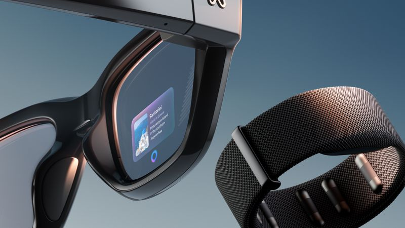
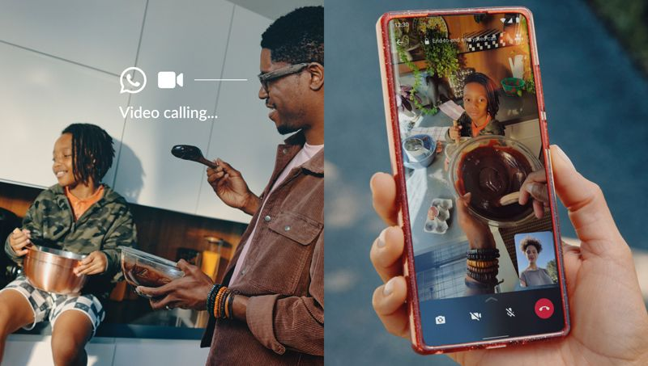
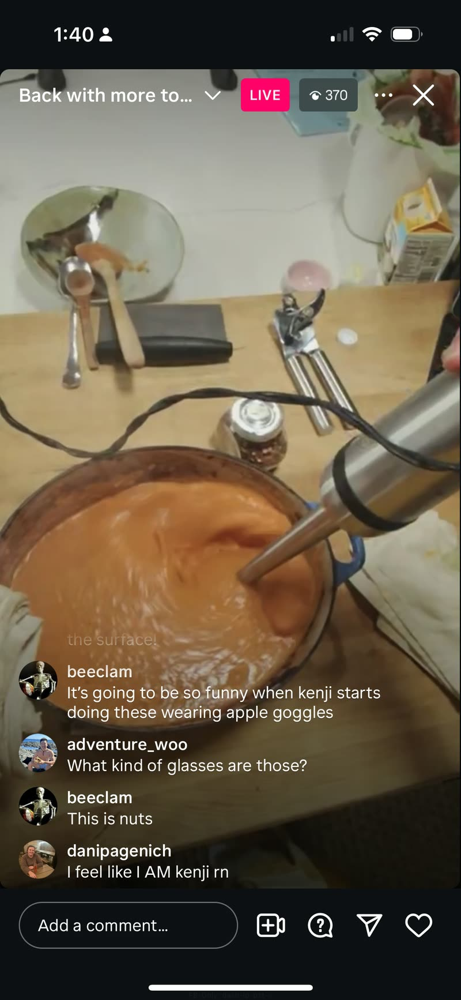
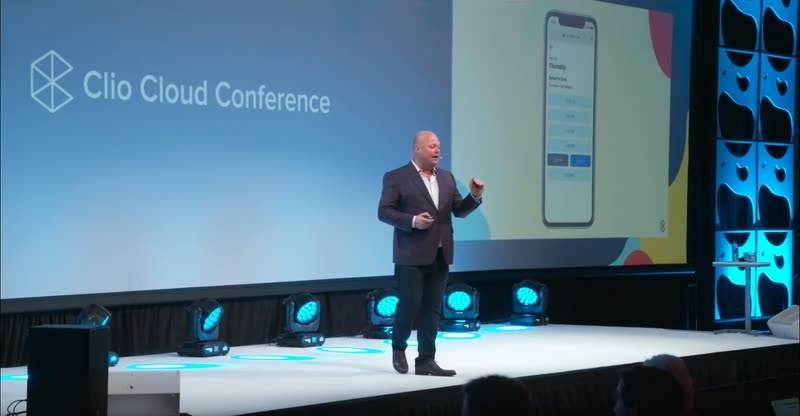
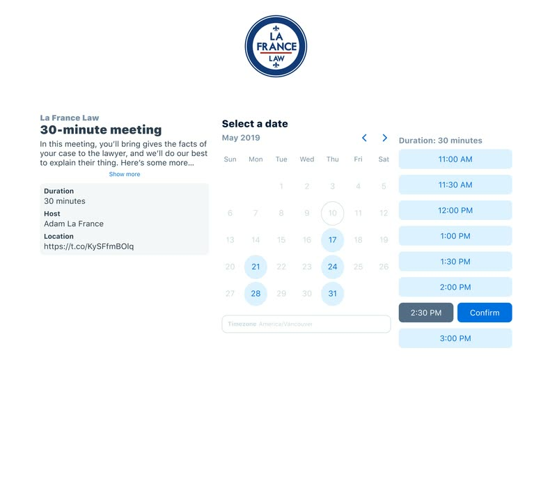
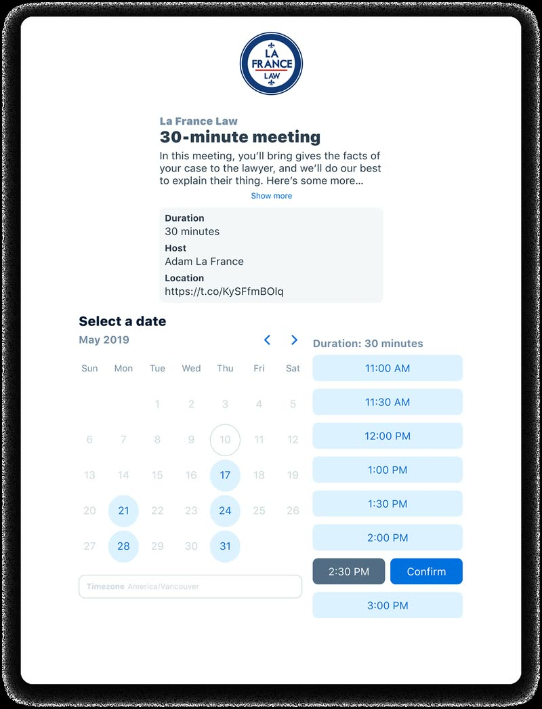
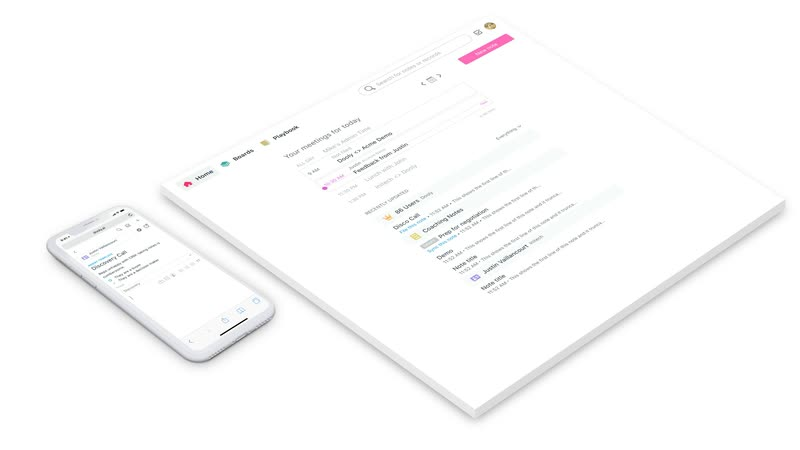
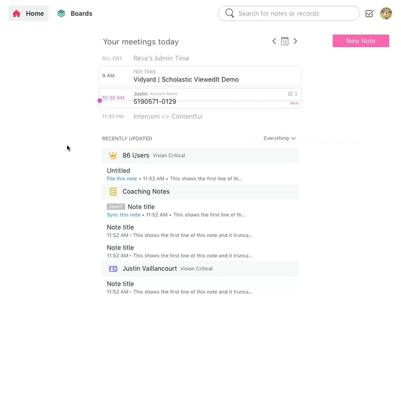
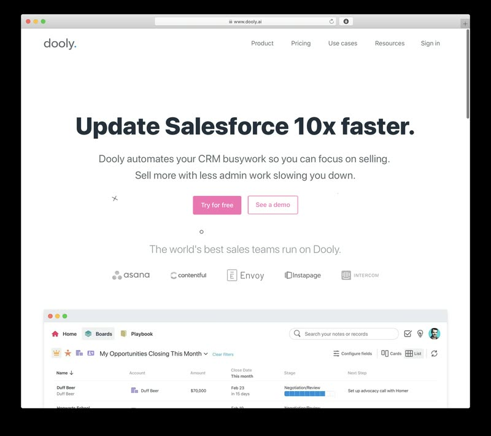
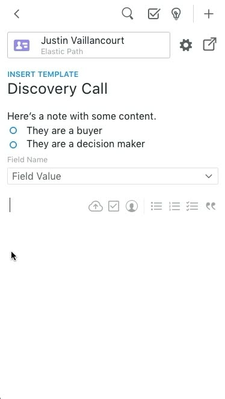

Product Designer · Seattle (for now?)
Hi there,
I'm Zachary Halvorson
A burger-obsessed, Japanese-learning, codes-y designer with 10+ years experience leading with vision, crafting experiences, mentoring others, and shipping products people love.
Here's some of the publicly-available work I'm proud of.
Staff Product Designer · Meta Reality Labs
Seattle, WA
Meta Ray-Ban Display
I shaped the design of several flagship features on Meta Ray-Ban Display, the pioneering AR glasses with gesture-based input. Teleprompter, handwriting input, the Weather app, the suite of Time apps, and the Music app with more AI-native experiences still to come as part of my prior work.

Staff Product Designer · Meta Reality Labs
Seattle, WA
Ray-Ban Meta
I worked on this category-defining pair of AI Glasses since they were in their Discovery phase, leading the design for both live-streaming and POV video calling across Meta's family of apps. Ray-Ban Meta headlined Meta Connect, and has inspired many similar products across the AI wearables industry.


Design Lead · Clio
to
Vancouver, BC
Clio Scheduler
I led design for Clio's Client Experience portfolio and conceived the Clio Scheduler, an online booking product for law firms that headlined Clio's customer conference. Clio is the world's leading legal practice platform, used in 130+ countries.



Lead Designer · Dooly
to
Vancouver, BC
Dooly
I joined pre-users and shaped Dooly end to end across product, brand, and front-end, building a note-taking tool that helps customer-facing teams connect with their customers. We grew from zero to dozens of enterprise accounts, including Asana, Intercom, and Figma.




Education & contact
Thanks for scrolling.
After 5+ years at Meta, wrapping up while on Agent Harnesses and Generative UI, I'm currently looking for my next role. If you've got questions, or if you want to see more of my work, feel free to reach out.
On the side I'm building Trip Cams, a road-trip companion that shows live traffic cameras along your route, and Remote Terminal, a zero-setup way to use your Mac from anywhere.


- Capilano University North Vancouver, BC
- Interactive Design Diploma –
- University of Alberta Edmonton, AB
- Bachelor of Education, Math major, Art minor –